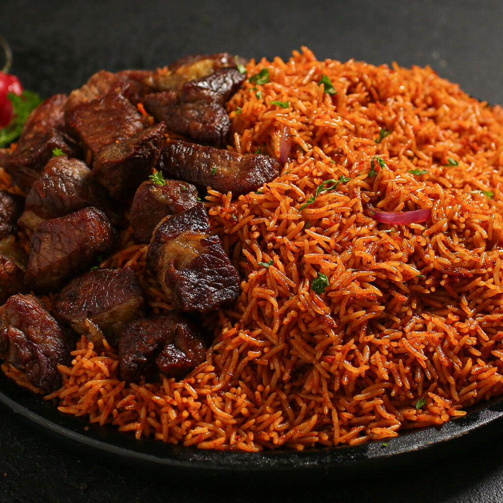

This is a recipe book on how to prepare the very common and delicious party Jollof Rice. A picture below:

Ingredients to create this tasty meal:
Rice(Long Grain/ Basmati rice)
Meat: Chicken/Beef/Fish/Turkey (Anyone goes)
Tomato/Pepper Blend
Seasoning:
Salt
Maggi:(Beef bouillon cubes)
Thyme
Curry Powder
Bay Leaves
Vegetables:
Onions
Carrots
Green Peas
Oil: (Any cooking oil)
Stock(beef)
Tomato Paste
Steps to prepare Jollof Rice:
Prep the pepper mix:
Wash the tomatoes, bell peppers, onions, and scotch bonnet.
Remove the seeds from the peppers, then cut into smaller chunks.
Cut the tomatoes and onion into quarters.
If you prefer less heat, remove the seeds from the scotch bonnet or skip it completely.
Place all the vegetables in a wide baking dish.
Cut a garlic bulb in half and place one half cut side down.
Add fresh or dried thyme and drizzle lightly with oil.
Roast for 20 to 30 minutes, turning halfway so it does not burn.
Let the vegetables cool slightly, transfer to a blender, press out the soft garlic, and blend until smooth.
If you do not have an oven, see Notes for how to make the pepper mix on the stove.
Cook the beef:
Cut the beef into chunks and place in a pot.
Season with salt, curry powder, bouillon, thyme, and sliced onions.
Add about ¼ cup of water, cover, and cook for 10 minutes.
Add a little more water and continue cooking for another 15 minutes or until the beef softens.
Separate the beef from the stock and save the stock for later.
Heat oil in a large pot and fry the cooked beef until browned.
While the meat is frying, prep the remaining ingredients by opening the tomato paste, measuring the spices, and chopping the onions.
Make the Base and Cook the Rice:
Reduce the oil from frying the meat, then add the chopped onions and fry for a few minutes.
Add the tomato paste and fry for about 15 minutes until it darkens and looks slightly grainy.
Pour in the blended pepper mix and stir well.
Season with salt, crushed bouillon, thyme, curry powder, and add the bay leaf.
Add the beef stock and half the water. Cover and simmer for 5 to 10 minutes.
While it simmers, wash the rice several times until the water runs clear.
Drain well, then add the rice to the pot and stir to coat it in the sauce.
Add the remaining water. The water should sit just slightly above the rice.
Cover the pot with foil, then place the lid on top.
Cook on low or medium low heat for 35 to 40 minutes.
When it is done, stir gently, fluff the rice, and serve warm.
NOTES:
To make the pepper mix without an oven:
If you do not have an oven or prefer not to use one, rinse and blend all the vegetables raw. Pour the blend into a pot and cook on high heat for about 40 minutes, stirring occasionally, until the water reduces and the mix becomes thick and concentrated.
To know more about the recipe, you can check out this